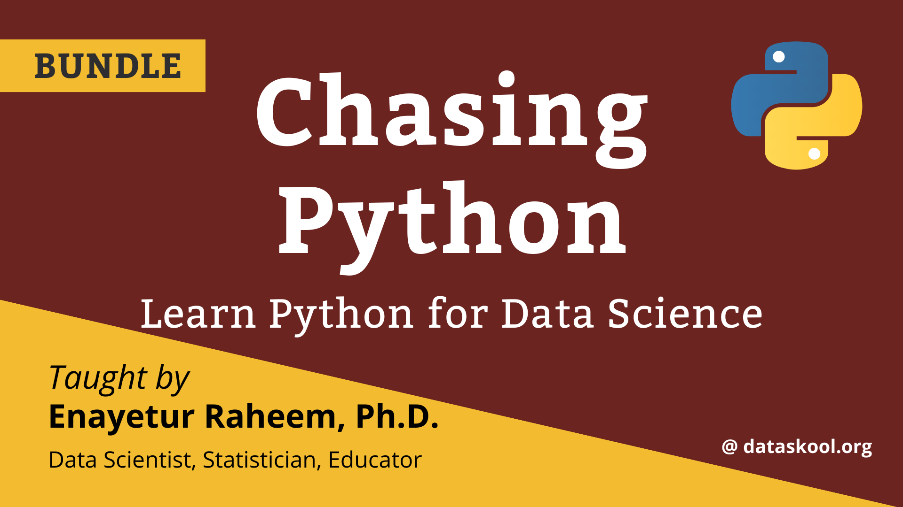

Chasing Python
Step into and run with Python for Data Science
Why this book?

This book serves as a companion to Statistics for Data Science with Python. Yes, you read it right. I wanted to teach a Statistics course with Python. However, many students, including most statisticians do not use Python in their day to day job. Therefore, there is a void to fill. A book just to learn Python for Data Science. By data science I mean all things related to data–data analysis, data wrangling, data science, experimenting with data, causal inference, and of course, machine learning and deep learning.
I have been programming with R for over 23 years now. That’s a long time to understand a language and feel comfortable using it. I do. In contrast, my experience with Python is little over 7 years now (2023). I can certainly feel that I do not understand Python as I understand R. This is because the time I spent with R and solved numerious kinds of problems with it is much more diverse and broad than my experience with Python and some of its commonly used libraries.
s written by someone who is not a trained computer scientist. However, with over 20 years analytic experience, and going through the journey myself and teaching hundreds of students, like every teacher, I feel I have something to give back.
The goals of this book is the following:
- a self-learner’s guide to data science with Python
- sequentially organized–you have to start from the beginning and gradually grow with it
Work in progress
I am actively writing this book. This is by no means a complete book. And it will never likely be complete as it will be actively developed, tested, re-written and deployed!
Thank you for your interest and thanks a bunch for your patience!
Since the book is actively being updated, that means, the organization of the contents is not finalized. As such, bookmarks would not be stable at this point. I would advise not to bookmark any chapter or section. Instead, bookmark the website of the book which is https://pybook.eraheem.com.
Have questions?
Thank you for reading this book. I hope this will be beneficial for you. Take a look at the contents and browse through the book. If you feel anything important is missing or you would like me to cover additional topics, please feel free to let me know by submitting a feature request at the Issue queue located at https://github.com/raheems/pybook/issues
To submit a question to the github issue queue, you need an account at https://www.Github.com, which is absolutely free. if you are not familiar with github, it is used by millions of developers worldwide. That may sound scary to you. But I can assure you that no technical knowledge is needed to submit a request or raise a question or report an error using the Issue queue.
If you have any question, please reach out to me via Social media: